Section 4.2 Graphs of Trigonometric Functions
Subsection Location by Coordinates
One of the most useful applications of the trigonometric ratios allows us to find distances or locations specified by angles. Starting with the definitions of sine and cosine,
we can solve for \(x\) and \(y\text{,}\) the coordinates of points on the terminal side of the angle, and obtain the following results.
Coordinates.
If point \(P\) is located at a distance \(r\) from the origin in the direction specified by angle \(\theta\) in standard position, then the coordinates of \(P\) are
These formulas make sense when we think of the unit circle. On a unit circle, the coordinates of a point designated by angle \(\theta\) are \((\cos \theta, \sin \theta\text{,}\) as shown at right. On a circle of radius \(r\text{,}\) the angle \(\theta\) forms a similar triangle whose dimensions are scaled up by a factor of \(r\text{.}\) In particular, the legs of the new triangle are \(r\) times larger than the original triangle.
Example 4.25.
Point \(P\) is located 6 centimeters from the origin in the direction of \(292\degree\text{.}\) Find the coordinates of \(P\text{,}\) rounded to hundredths.
The location of point \(P\) is shown at right. We see that \(r = 6\text{,}\) and we can use a calculator to evaluate \(\cos 292\degree\) and \(\sin 292\degree\text{.}\)
The coordinates of \(P\) are approximately \((2.25, -5.56)\text{.}\)
Checkpoint 4.26.
You find an old map that shows a buried treasure located 500 yards from the big oak tree in the direction \(215\degree\text{,}\) as shown at right. You don't have anything with you to measure angles, but you have your calculator.
- Find the cosine of \(215\degree\text{.}\) How far west should you walk from the big oak in order to be directly north of the treasure?
- Find the tangent of \(215\degree\text{.}\) How far south should you walk from your present location before you begin digging?
- 409.58 yds
- 286.79 yds
Subsection Bearings
Navigational directions for ships and planes are sometimes given as bearings, which are angles measured clockwise from north. For example, a bearing of \(110\degree\) is equivalent to an angle of \(20\degree\) in standard position, or to its coterminal angle \(340\degree\text{,}\) as shown at right.
From this example, we see that to convert a bearing to an angle \(\theta\) in standard position, we can subtract the bearing from \(90\degree\text{,}\) or
Example 4.27.
Francine leaves the airport at a bearing of \(245\degree\) and flies 60 miles. How far south of the airport is she at that time?
A bearing of \(245\degree\) is in the same direction as an angle of
in standard position, as shown at right, or as the coterminal angle
We would like the \(y\)-coordinate of Francine's position, so we calculate \(y = r \sin 205\degree\text{.}\)
Francine is about 25.4 miles south of the airport.
Checkpoint 4.28.
Delbert leaves the airport and flies 150 miles at a bearing of \(132\degree\text{.}\) How far east of the airport is he at that time?
111.5 mile
Subsection A Periodic Function of Angle
Imagine that you are riding on a Ferris wheel. As the wheel turns, your height above the ground increases and then decreases again, repeating the same pattern each time the Ferris wheel makes a complete rotation. This pattern is an example of a periodic function. We use periodic functions to model phenomena that exhibit cyclical behavior, such as the height of tides, seasonal patterns of growth in plants and animals, radio waves, and planetary motion.
We'll create a mathematical model for a ride on a Ferris wheel. Our Ferris wheel has a radius of 100 feet and rotates counterclockwise. In order to graph the Ferris wheel function, we must first specify the input and output variables, and then choose a coordinate system to display their values.
We'll place the origin at the center of the Ferris wheel. Then the line from the origin to your position on the wheel makes an angle with the horizontal, as shown at right. This angle, \(\theta\text{,}\) will be the input variable for the function. Your height, \(h\text{,}\) is also a variable, and is related to the \(y\)-coordinate of your position; in fact, you can check that \(h = y + 100\text{,}\) because the center of the wheel is 100 feet above the ground.
To simplify the model, we'll first graph \(y\) as the output variable, instead of \(h\text{.}\) As the angle \(\theta\) increases from \(0\degree\) to \(90\degree\text{,}\) your \(y\)-coordinate increases from 0 to 100. You are then at the top of the wheel. Then, as \(\theta\) increases from \(90\degree\) to \(180\degree\text{,}\) your \(y\)-coordinate decreases from 100 back to 0.
Finally, as \(\theta\) increases from \(180\degree\) to \(360\degree\text{,}\) your \(y\)-coordinate decreases from 0 to \(-100\) and then increases from \(-100\) back to 0. You have made one complete rotation on the Ferris wheel. If you go around again, \(\theta\) increases from \(360\degree\) to \(720\degree\text{,}\) and the graph of your \(y\)-coordinate will repeat the pattern of the first rotation. The figure above shows how your \(y\)-coordinate is plotted as a function of the angle \(\theta\text{.}\)
You may have noticed that you can find the \(y\)-coordinate of your position on the Ferris wheel by using the coordinate formulas from the beginning of this section. Because the Ferris wheel has radius 100 feet, we have
For example, when \(\theta = 30\degree\text{,}\) the \(y\)-coordinate is
and your height above the ground is
In general, then, \(h\) is given as a function of \(\theta\) by
Subsection The Sine Function
The trigonometric ratio \(\sin \theta\) is actually a function of the angle \(\theta\text{.}\) As we have seen, the value of \(\sin \theta\) does not depend on the size of the triangle that contains the angle \(\theta\text{,}\) but only on the size of the angle itself. Thus, for each value of \(\theta\text{,}\) there is only one value of \(\sin \theta\text{,}\) and we may write \(f(\theta) = \sin \theta\text{.}\)
Example 4.29.
Graph the sine function \(f(\theta) = \sin \theta\text{.}\)
We first make a table of values. You can use your calculator's table feature to verify the following values, rounded to two decimal places.
| \(\theta\) | \(0\degree\) | \(10\degree\) | \(20\degree\) | \(30\degree\) | \(40\degree\) | \(50\degree\) | \(60\degree\) | \(70\degree\) | \(80\degree\) | \(90\degree\) |
| \(\sin \theta\) | \(0\) | \(0.17\) | \(0.34\) | \(0.50\) | \(0.64\) | \(0.77\) | \(0.87\) | \(0.94\) | \(0.98\) | \(1\) |
If we plot the points in the table, we can graph the sine function in the first quadrant, from \(0\degree\) to \(90\degree\text{.}\)
Recall that the values of \(\sin \theta\) in the second quadrant can be found using reference angles: \(\sin (180\degree - \theta) = \sin \theta\text{.}\) This fact gives us values of \(\sin \theta\) from \(90\degree\) to \(180\degree\text{.}\)
| \(\theta\) | \(100\degree\) | \(110\degree\) | \(120\degree\) | \(130\degree\) | \(140\degree\) | \(150\degree\) | \(160\degree\) | \(170\degree\) | \(180\degree\) |
| \(\sin \theta\) | \(0.98\) | \(0.94\) | \(0.87\) | \(0.77\) | \(0.64\) | \(0.50\) | \(0.34\) | \(0.17\) | \(0\) |
The values of \(\sin \theta\) in the third and fourth quadrants are the negatives of their values in the second and first quadrants.
| \(\theta\) | \(190\degree\) | \(200\degree\) | \(210\degree\) | \(220\degree\) | \(230\degree\) | \(240\degree\) | \(250\degree\) | \(260\degree\) | \(270\degree\) |
| \(\sin \theta\) | \(-0.17\) | \(-0.34\) | \(-0.50\) | \(-0.64\) | \(-0.77\) | \(-0.87\) | \(-0.94\) | \(-0.98\) | \(-1\) |
| \(\theta\) | \(280\degree\) | \(290\degree\) | \(300\degree\) | \(310\degree\) | \(320\degree\) | \(330\degree\) | \(340\degree\) | \(350\degree\) | \(360\degree\) |
| \(\sin \theta\) | \(-0.98\) | \(-0.94\) | \(-0.87\) | \(-0.77\) | \(-0.64\) | \(-0.50\) | \(-0.34\) | \(-0.17\) | \(0\) |
The graph of \(f(\theta) = \sin \theta\) from \(0\degree\) to \(360\degree\) is shown below.
If we continue the graph for angles larger than \(360\degree\) or smaller than \(0\degree\text{,}\) we find that the same pattern repeats, as shown below. This should not be surprising, because we know that coterminal angles have the same trigonometric ratios.
The sine is an example of a periodic function. The smallest interval on which the graph repeats is called the period of the graph. From the graph in the previous example, we make the following observations:
- The period of the sine function is \(360\degree\text{.}\)
- The maximum and minimum function values are 1 and 1, respectively.
- The graph oscillates around its midline, the horizontal line \(y = 0\text{.}\)
- The distance between the midline and either the maximum or minimum value is called the amplitude of the function, so the amplitude of the sine function is 1.
You can use your calculator to graph the sine function, by entering
\(\qquad\qquad\qquad \text{Y}_{1} =\)SIN \(\small\boxed{X,T,\theta, n}\) )
and pressing ZOOM \(7\) for the trig window. The graph shows two periods of the sine function, from \(\theta = -360\degree\) to \(\theta = 360\degree\text{.}\)
Checkpoint 4.30.
Your height \(h\) on the Ferris wheel is a function of \(\theta\text{,}\)
Complete the table of values and graph the Ferris wheel function, \(h = F(\theta)\text{.}\)
| \(\theta\) | \(0\degree\) | \(30\degree\) | \(60\degree\) | \(90\degree\) | \(120\degree\) | \(150\degree\) | \(180\degree\) |
| \(\sin \theta\) | \(\hphantom{0000}\) | \(\hphantom{0000}\) | \(\hphantom{0000}\) | \(\hphantom{0000}\) | \(\hphantom{0000}\) | \(\hphantom{0000}\) | \(\hphantom{0000}\) |
| \(h = F(\theta)\) | \(\hphantom{0000}\) | \(\hphantom{0000}\) | \(\hphantom{0000}\) | \(\hphantom{0000}\) | \(\hphantom{0000}\) | \(\hphantom{0000}\) | \(\hphantom{0000}\) |
| \(\theta\) | \(210\degree\) | \(240\degree\) | \(270\degree\) | \(300\degree\) | \(330\degree\) | \(360\degree\) |
| \(\sin \theta\) | \(\hphantom{0000}\) | \(\hphantom{0000}\) | \(\hphantom{0000}\) | \(\hphantom{0000}\) | \(\hphantom{0000}\) | \(\hphantom{0000}\) |
| \(h = F(\theta)\) | \(\hphantom{0000}\) | \(\hphantom{0000}\) | \(\hphantom{0000}\) | \(\hphantom{0000}\) | \(\hphantom{0000}\) | \(\hphantom{0000}\) |
| \(\theta\) | \(0\degree\) | \(30\degree\) | \(60\degree\) | \(90\degree\) | \(120\degree\) | \(150\degree\) | \(180\degree\) |
| \(\sin \theta\) | \(0\) | \(0.5\) | \(0.866\) | \(1.0\) | \(0.866\) | \(0.5\) | \(0\) |
| \(h = F(\theta)\) | \(100\) | \(150\) | \(186.6\) | \(200\) | \(186.6\) | \(150\) | \(100\) |
| \(\theta\) | \(210\degree\) | \(240\degree\) | \(270\degree\) | \(300\degree\) | \(330\degree\) | \(360\degree\) |
| \(\sin \theta\) | \(-0.5\) | \(-0.866\) | \(-1.0\) | \(-0.866\) | \(-0.5\) | \(0\) |
| \(h = F(\theta)\) | \(50\) | \(13.4\) | \(0\) | \(13.4\) | \(50\) | \(100\) |
Subsection The Cosine Function
In the previous exercise you graphed the height of a person riding on a Ferris wheel. Your graph involved \(\sin \theta\text{,}\) because the sine function tells us the \(y\)-coordinate of a point that travels around a circle. The cosine function tells us the \(x\)-coordinate of a point that travels around a circle.
Example 4.31.
Small adjustments to the fit of a bicycle can affect both the cyclist's efficiency and the stress on his or her jounts. The KOPS rule (Knee Over Pedal Stem) aligns the cyclist's knee directly over the pedal at the point of maximum force, as shown at right. As the cyclist's foot rotates away from this KOPS line, stress on the knee increases.

- Suppose the pedal crank is 18 centimeters long. When the crank makes an angle with the horizontal, how far is the cyclist's foot displaced horizontally from the KOPS line?
- Graph the horizontal displacement, \(d\text{,}\) as a function of \(\theta\text{.}\)
-
The cyclist's foot travels around a circle of radius 18 centimeters. If we place the origin at the center of the chain gear, the \(x\)-coordinate of the foot is given by
\begin{equation*} x = r \cos \theta = 18 \cos \theta \end{equation*}(See the figure at right.) The KOPS line is the vertical line \(x = 18\text{,}\) so the horizontal distance between the cyclist's foot and the KOPS line is
\begin{equation*} d = 18 - 18 \cos \theta \end{equation*}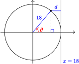 -
You can use your calculator to verify the table and graph for the function
\begin{equation*} d = 18 - 18 \cos \theta \end{equation*}shown below.
\(\theta\) \(0\degree\) \(30\degree\) \(60\degree\) \(90\degree\) \(120\degree\) \(150\degree\) \(180\degree\) \(210\degree\) \(240\degree\) \(270\degree\) \(300\degree\) \(330\degree\) \(360\degree\) \(d\) \(0\) \(2.4\) \(9\) \(18\) \(27\) \(33.6\) \(36\) \(33.6\) \(27\) \(18\) \(9\) \(2.4\) \(0\) 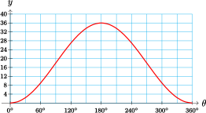
You can see that the cosine graph is similar to the sine graph, but they are not identical.
Checkpoint 4.32.
-
Complete the table below with values rounded to two decimal places. Use the table and your knowledge of reference angles to graph the cosine function, \(f(\theta) = \cos \theta~\) from \(-180\degree\) to \(540\degree\text{.}\)
\(\theta\) \(0\degree\) \(10\degree\) \(20\degree\) \(30\degree\) \(40\degree\) \(50\degree\) \(60\degree\) \(70\degree\) \(80\degree\) \(90\degree\) \(\cos \theta\) \(\hphantom{0000}\) \(\hphantom{0000}\) \(\hphantom{0000}\) \(\hphantom{0000}\) \(\hphantom{0000}\) \(\hphantom{0000}\) \(\hphantom{0000}\) \(\hphantom{0000}\) \(\hphantom{0000}\) \(\hphantom{0000}\) 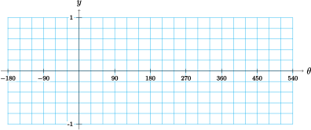 - Use your graph to find the period, amplitude, and midline of the cosine function. How does the graph of cosine differ from the graph of sine? (Hint: Consider the intercepts of the graph, and the location of the maximum and minimum values.)
-
\(\theta\) \(0\degree\) \(10\degree\) \(20\degree\) \(30\degree\) \(40\degree\) \(50\degree\) \(60\degree\) \(70\degree\) \(80\degree\) \(90\degree\) \(\cos \theta\) \(1\) \(0.98\) \(0.94\) \(0.87\) \(0.77\) \(0.64\) \(0.50\) \(0.34\) \(0.17\) \(0\) 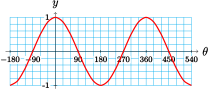 - Period: \(360\degree\text{,}\) amplitude: 1, midline: \(y = 0\text{.}\) The cosine graph starts \((\theta = 0\degree)\) at its high point, while the sine graph starts \((\theta = 0\degree)\) at its midline.
Subsection Function Notation
We use the notation \(y = f(x)\) to indicate that \(y\) is a function of \(x\text{,}\) that is, \(x\) is the input variable and \(y\) is the output variable.
Example 4.33.
Make a table of input and output values and a graph for the function \(y = f(x) = \sqrt{9 - x^2}\text{.}\)
We choose several values for the input variable, \(x\text{,}\) and evaluate the function to find the corresponding values of the output variable, \(y\text{.}\) For example,
We plot the points in the table and connect them to obtain the graph shown at right.
| \(x\) | \(-3\) | \(-2\) | \(-1\) | \(0\) | \(1\) | \(2\) | \(3\) |
| \(y\) | \(0\) | \(\sqrt{5}\) | \(2\sqrt{2}\) | \(3\) | \(2\sqrt{2}\) | \(\sqrt{5}\) | \(0\) |
Of course, we don't always use \(x\) and \(y\) for the input and output variables. In the previous example, we could write \(w = f(t) = \sqrt{9 - t^2}\) for the function, so that \(t\) is the input and \(w\) is the output. The table of values and the graph are the same; only the names of the variables have changed.
Caution 4.34.
When we discuss trigonometric functions, there are several variables involved. Our definitions of the trig ratios involve four variables: \(x\text{,}\) \(y\text{,}\) \(r\text{,}\) and \(\theta\text{,}\) as illustrated below.

If the value of \(r\) is fixed for a given situation, such as the Ferris wheel or the bicycle wheel discussed above, then \(x\) and \(y\) are both functions of \(\theta\text{.}\) This means that the values of \(x\) and \(y\) depend only on the value of the angle \(\theta\text{.}\) If \(r = 1\text{,}\) we have
The graphs of these functions are shown below. Note particularly that the horizontal axis displays values of the input variable, and the vertical axis displays the output variable.
If we use different variables for the input and output, the functions and their graphs are the same, but the axes should be labeled with the appropriate variables.
Checkpoint 4.35.
Sketch a graph of each function, and label the axes.
- \(\displaystyle d = F(\phi) = \sin \phi\)
- \(\displaystyle t = G(\beta) = \cos \beta\)
- 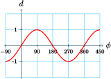
- 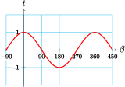
Caution 4.36.
When we write \(\cos \theta\text{,}\) we really mean \(\cos (\theta)\text{,}\) because we are using "cos" as the name of a function whose input is \(\theta\text{.}\)
A common mistake is to think of \(\cos \theta\) or \(\cos (\theta)\) as a product, cos times \(\theta\text{,}\) but this makes no sense, because "cos" by itself has no meaning. Remember that \(\cos \theta\) represents a single number, namely the output of the cosine function.
Subsection The Tangent Function
The tangent function is periodic, but its graph is not similar to the graphs of sine and cosine. Recall that the tangent of an angle in standard position is defined by
Study the figure at right to see that as \(\theta\) increases from \(0\degree\) to \(90\degree\text{,}\) \(y\) increases while \(x\) remains constant, so the value of \(\tan \theta\) increases.

Example 4.37.
Sketch a graph of \(f(\theta) = \tan \theta\) for \(0\degree \le \theta \le 180\degree\text{.}\)
You can use your calculator to verify the following values for \(\tan \theta\text{.}\)
| \(\theta\) | \(0\degree\) | \(30\degree\) | \(60\degree\) | \(70\degree\) | \(80\degree\) | \(85\degree\) |
| \(\tan \theta\) | \(0\) | \(0.58\) | \(1.73\) | \(2.75\) | \(5.67\) | \(11.43\) |
As \(\theta\) gets closer to \(90\degree\text{,}\) \(\tan \theta\) increases very rapidly. Recall that \(\tan 90\degree\) is undefined, so there is no point on the graph at \(\theta = 90\degree\text{.}\) The graph of \(f(\theta) = \tan \theta\) in the first quadrant is shown at right.
In the second quadrant, the tangent is negative. The reference angle for each angle in the second quadrant is its supplement, so
as shown at right. For example, you can verify that
In particular, for values of \(\theta\) close to \(90\degree\text{,}\) the values of \(\tan \theta\) are large negative numbers. We plot several points and sketch the graph in the second quadrant.
| \(\theta\) | \(100\degree\) | \(110\degree\) | \(120\degree\) | \(150\degree\) | \(180\degree\) |
| \(\tan \theta\) | \(-5.67\) | \(-2.75\) | \(-1.73\) | \(-0.58\) | \(0\) |
In the figure at right, note that the graph has a break at \(\theta = 90\degree\text{,}\) because \(\tan 90\degree\) is undefined.
Now let's consider the graph of \(f(\theta) = \tan \theta\) in the third and fourth quadrants. The tangent is positive in the third quadrant, and negative in the fourth quadrant. In fact, from the figure below you can see that the angles \(\theta\) and \(180\degree + \theta\) are vertical angles.
Because \(\theta\) and \(180\degree + \theta\) have the same reference angle, they have the same tangent. For example,
Thus, the graph of \(\tan \theta\) in the third quadrant is the same as its graph in the first quadrant. Similarly, the graph of the tangent function in the fourth quadrant is the same as its graph in the second quadrant. The completed graph is shown below.
Checkpoint 4.38.
- What is the period of the tangent function?
- Does the graph of tangent have an amplitude?
- For what values of \(\theta\) is \(\tan \theta\) undefined?
- Give the equations of any horizontal or vertical asymptotes for \(0\degree \le \theta \le 360\degree\text{.}\)
- \(\displaystyle 180\degree\)
- No
- \(90\degree, ~270\degree\text{,}\) and their coterminal angles
- \(\displaystyle \theta = 90\degree, ~\theta = 270\degree\)
Subsection Angle of Inclination
The figure at right shows a line in the \(xy\)-plane. The angle \(\alpha\) measured in the positive direction from the positive \(x\)-axis to the line is called the angle of inclination of the line.
Note 4.39.
Recall that the slope of a line is given by the ratio \(\dfrac {\text{change in}~ y}{\text{change in}~x}\) as we move from one point to another on the line. So, if we create a right triangle by dropping a perpendicular segment from the line to the \(x\)-axis, the ratio of sides \(\dfrac {\text{opposite}}{\text{adjacent}}\) gives the slope of the line.
Angle of Inclination.
The angle of inclination of a line is the angle \(\alpha\) measured in the positive direction from the positive \(x\)-axis to the line. If the slope of the line is \(m\text{,}\) then
where \(0\degree \le \alpha \le 180\degree\text{.}\)
Example 4.40.
Find the angle of inclination of the line \(y = \frac{3}{4}x - 3\text{.}\)
The slope of the line is \(\frac{3}{4}\text{.}\) Therefore,
The angle of inclination is \(36.9\degree\text{.}\)
Checkpoint 4.41.
Find the angle of inclination of the line shown at right,
\(129.8\degree\)
Review the following skills you will need for this section.
Algebra Refresher 4.4.
- Graph the function.
- Give the coordinates of any intercepts, and any maximum or minimum values.
\(\displaystyle f(x) = -6 + \dfrac{2}{3} x\)
\(\displaystyle g(x) = 4 - \dfrac{3}{2} x\)
\(\displaystyle p(t) = t^2 - 4\)
\(\displaystyle q(t) = 9 - t^2\)
\(\displaystyle F(x) = 2 - \sqrt{z}\)
\(\displaystyle G(z) = \sqrt{4 - z}\)
\(\underline{\qquad\qquad\qquad\qquad}\)
Algebra Refresher Answers
- 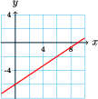
- \(\displaystyle (0,-6), ~ (9,0)\)
- 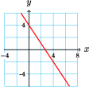
- \((0,4)\text{,}\) \(~ \left(\dfrac{8}{3},0\right)\)
- 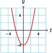
- \(\displaystyle (0,-4), ~ (-2,0), ~ (2,0), ~ \text{Min:}~-4\)
- 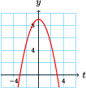
- \(\displaystyle (0,9), ~ (-3,0), ~ (3,0), ~ \text{Max:}~9\)
- 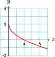
- \(\displaystyle (0,2), ~ (4,0), ~ \text{Max:}~2\)
- 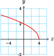
- \(\displaystyle (0,2), ~ (4,0), ~ \text{Min:}~0\)
Subsection Section 4.2 Summary
Subsubsection Vocabulary
- Input variable
- Output variable
- Periodic function
- Period
- Midline
- Amplitude
- Asymptote
- Angle of Inclination
- Bearings
Subsubsection Concepts
Coordinates.
If point \(P\) is located at a distance \(r\) from the origin in the direction specified by angle \(\theta\) in standard position, then the coordinates of \(P\) are
\begin{equation*} x = r \cos \theta ~~~~ \text{and} ~~~~ y = r \sin \theta \end{equation*}- Navigational directions for ships and planes are sometimes given as bearings, which are angles measured clockwise from north.
- Periodic functions are used to model phenomena that exhibit cyclical behavior.
- The trigonometric ratios \(\sin \theta\) and \(\cos \theta\) are functions of the angle \(\theta\text{.}\)
- The period of the sine function is \(360\degree\text{.}\) Its midline is the horizontal line \(y = 0\text{,}\) and the amplitude of the sine function is 1.
- The graph of the cosine function has the same period, midline, and amplitude as the graph of the sine function. However, the locations of the intercepts and of the maximum and minimum values are different.
- We use the notation \(y = f(x)\) to indicate that \(y\) is a function of \(x\text{,}\) that is, \(x\) is the input variable and \(y\) is the output variable.
- The tangent function has period \(180\degree\text{.}\) It is undefined at odd multiples of \(90\degree\text{,}\) and is increasing on each interval of its domain.
Angle of Inclination.
The angle of inclination of a line is the angle \(\alpha\) measured in the positive direction from the positive \(x\)-axis to the line. If the slope of the line is \(m\text{,}\) then
\begin{equation*} \tan \alpha = m \end{equation*}where \(0\degree \le \alpha \le 180\degree\text{.}\)
Subsubsection Study Questions
-
Use the figure to help you fill in the blanks.
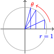As \(\theta\) increases from \(0\degree\) to \(90\degree\text{,}\) \(f(\theta) = \sin \theta\) from to .
As \(\theta\) increases from \(90\degree\) to \(180\degree\text{,}\) \(f(\theta) = \sin \theta\) from to .
As \(\theta\) increases from \(180\degree\) to \(270\degree\text{,}\) \(f(\theta) = \sin \theta\) from to .
As \(\theta\) increases from \(270\degree\) to \(360\degree\text{,}\) \(f(\theta) = \sin \theta\) from to .
-
Use the figure to help you fill in the blanks.
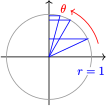As \(\theta\) increases from \(0\degree\) to \(90\degree\text{,}\) \(f(\theta) = \cos \theta\) from to .
As \(\theta\) increases from \(90\degree\) to \(180\degree\text{,}\) \(f(\theta) = \cos \theta\) from to .
As \(\theta\) increases from \(180\degree\) to \(270\degree\text{,}\) \(f(\theta) = \cos \theta\) from to .
As \(\theta\) increases from \(270\degree\) to \(360\degree\text{,}\) \(f(\theta) = \cos \theta\) from to .
- List several ways in which the graph of \(y = \tan \theta\) is different from the graphs of \(y = \sin \theta\) and \(y = \cos \theta\text{.}\)
- If the angle of inclination of a line is greater than \(45\degree\text{,}\) what can you say about its slope?
Subsubsection Skills
- Find coordinates #1-12, 19-20
- Use bearings to determine position #13-18
- Sketch graphs of the sine and cosine functions #21-26, 31-32
- Find the coordinates of points on a sine or cosine graph #27-30, 41-44
- Use function notation #33-40
- Find reference angles #45-48
- Solve equations graphically #49-56
- Graph the tangent function #57-60
- Find and use the angle of inclination of a line #61-70
Exercises Homework 4.2
For Problems 1–6, find exact values for the coordinates of the point.
1.
2.
3.
4.
5.
6.
For Problems 7–12, find the coordinates of the point, rounded to hundredths.
7.
8.
9.
10.
11.
12.
For Problems 13–18, a ship sails from the seaport on the given bearing for the given distance.
- Make a sketch showing the ship's current location relative to the seaport.
- How far east or west of the seaport is the ship's present location? How far north or south?
13.
\(36\degree\text{,}\) 26 miles
14.
\(124\degree\text{,}\) 80 km
15.
\(230\degree\text{,}\) 120 km
16.
\(318\degree\text{,}\) 75 miles
17.
\(285\degree\text{,}\) 32 km
18.
\(192\degree\text{,}\) 260 miles
19.
Estimate the \(x\)-coordinate of the points on the unit circle designated by each angle, and complete the table. (Hint: Use symmetry in the second, third, and fourth quadrants.)

| Angle | \(0\degree\) | \(10\degree\) | \(20\degree\) | \(30\degree\) | \(40\degree\) | \(50\degree\) | \(60\degree\) | \(70\degree\) | \(80\degree\) | \(90\degree\) |
| \(x\)-coordinate | \(\hphantom{0000}\) | \(\hphantom{0000}\) | \(\hphantom{0000}\) | \(\hphantom{0000}\) | \(\hphantom{0000}\) | \(\hphantom{0000}\) | \(\hphantom{0000}\) | \(\hphantom{0000}\) | \(\hphantom{0000}\) | \(\hphantom{0000}\) |
| Angle | \(100\degree\) | \(110\degree\) | \(120\degree\) | \(130\degree\) | \(140\degree\) | \(150\degree\) | \(160\degree\) | \(170\degree\) | \(180\degree\) |
| \(x\)-coordinate | \(\hphantom{0000}\) | \(\hphantom{0000}\) | \(\hphantom{0000}\) | \(\hphantom{0000}\) | \(\hphantom{0000}\) | \(\hphantom{0000}\) | \(\hphantom{0000}\) | \(\hphantom{0000}\) | \(\hphantom{0000}\) |
| Angle | \(190\degree\) | \(200\degree\) | \(210\degree\) | \(220\degree\) | \(230\degree\) | \(240\degree\) | \(250\degree\) | \(260\degree\) | \(270\degree\) |
| \(x\)-coordinate | \(\hphantom{0000}\) | \(\hphantom{0000}\) | \(\hphantom{0000}\) | \(\hphantom{0000}\) | \(\hphantom{0000}\) | \(\hphantom{0000}\) | \(\hphantom{0000}\) | \(\hphantom{0000}\) | \(\hphantom{0000}\) |
| Angle | \(280\degree\) | \(290\degree\) | \(300\degree\) | \(310\degree\) | \(320\degree\) | \(330\degree\) | \(340\degree\) | \(350\degree\) | \(360\degree\) |
| \(x\)-coordinate | \(\hphantom{0000}\) | \(\hphantom{0000}\) | \(\hphantom{0000}\) | \(\hphantom{0000}\) | \(\hphantom{0000}\) | \(\hphantom{0000}\) | \(\hphantom{0000}\) | \(\hphantom{0000}\) | \(\hphantom{0000}\) |
20.
Estimate the \(y\)-coordinate of the points on the unit circle designated by each angle, and complete the table. (Hint: Use symmetry in the second, third, and fourth quadrants.)
| Angle | \(0\degree\) | \(10\degree\) | \(20\degree\) | \(30\degree\) | \(40\degree\) | \(50\degree\) | \(60\degree\) | \(70\degree\) | \(80\degree\) | \(90\degree\) |
| \(x\)-coordinate | \(\hphantom{0000}\) | \(\hphantom{0000}\) | \(\hphantom{0000}\) | \(\hphantom{0000}\) | \(\hphantom{0000}\) | \(\hphantom{0000}\) | \(\hphantom{0000}\) | \(\hphantom{0000}\) | \(\hphantom{0000}\) | \(\hphantom{0000}\) |
| Angle | \(100\degree\) | \(110\degree\) | \(120\degree\) | \(130\degree\) | \(140\degree\) | \(150\degree\) | \(160\degree\) | \(170\degree\) | \(180\degree\) |
| \(x\)-coordinate | \(\hphantom{0000}\) | \(\hphantom{0000}\) | \(\hphantom{0000}\) | \(\hphantom{0000}\) | \(\hphantom{0000}\) | \(\hphantom{0000}\) | \(\hphantom{0000}\) | \(\hphantom{0000}\) | \(\hphantom{0000}\) |
| Angle | \(190\degree\) | \(200\degree\) | \(210\degree\) | \(220\degree\) | \(230\degree\) | \(240\degree\) | \(250\degree\) | \(260\degree\) | \(270\degree\) |
| \(x\)-coordinate | \(\hphantom{0000}\) | \(\hphantom{0000}\) | \(\hphantom{0000}\) | \(\hphantom{0000}\) | \(\hphantom{0000}\) | \(\hphantom{0000}\) | \(\hphantom{0000}\) | \(\hphantom{0000}\) | \(\hphantom{0000}\) |
| Angle | \(280\degree\) | \(290\degree\) | \(300\degree\) | \(310\degree\) | \(320\degree\) | \(330\degree\) | \(340\degree\) | \(350\degree\) | \(360\degree\) |
| \(x\)-coordinate | \(\hphantom{0000}\) | \(\hphantom{0000}\) | \(\hphantom{0000}\) | \(\hphantom{0000}\) | \(\hphantom{0000}\) | \(\hphantom{0000}\) | \(\hphantom{0000}\) | \(\hphantom{0000}\) | \(\hphantom{0000}\) |
21.
- Draw vertical line segments from the unit circle to the \(x\)-axis to illustrate the \(y\)-coordinate of each point designated by the angles, \(0\degree\) to \(90\degree\text{,}\) shown on the figure below.
- Transfer your vertical line segments to the appropriate position on the grid below.
- Repeat parts (a) and (b) for the other three quadrants.
- Connect the tops of the segments to sketch a graph of \(y = \sin \theta\text{.}\)
22.
- Draw horizontal line segments from the unit circle to the \(y\)-axis to illustrate the \(x\)-coordinate of each point designated by the angles, \(0\degree\) to \(90\degree\text{,}\) shown on the figure below.
- Transfer your horizontal line segments into vertical line segments at the appropriate position on the grid below.
- Repeat parts (a) and (b) for the other three quadrants.
- Connect the tops of the segments to sketch a graph of \(y = \cos \theta\text{.}\)
23.
- Prepare a graph with the horizontal axis scaled from \(0\degree\) to \(360\degree\) in multiples of \(45\degree\text{.}\)
- Sketch a graph of \(f(\theta) = \sin \theta\) by plotting points for multiples of \(45\degree\text{.}\)
24.
- Prepare a graph with the horizontal axis scaled from \(0\degree\) to \(360\degree\) in multiples of \(45\degree\text{.}\)
- Sketch a graph of \(f(\theta) = \cos \theta\) by plotting points for multiples of \(45\degree\text{.}\)
25.
- Prepare a graph with the horizontal axis scaled from \(0\degree\) to \(360\degree\) in multiples of \(30\degree\text{.}\)
- Sketch a graph of \(f(\theta) = \cos \theta\) by plotting points for multiples of \(30\degree\text{.}\)
26.
- Prepare a graph with the horizontal axis scaled from \(0\degree\) to \(360\degree\) in multiples of \(30\degree\text{.}\)
- Sketch a graph of \(f(\theta) = \sin \theta\) by plotting points for multiples of \(30\degree\text{.}\)
For Problems 27–30, give the coordinates of each point on the graph of \(f(\theta) = \sin \theta\) or \(f(\theta) = \cos \theta\text{.}\)
27.
28.
29.
30.
31.
Make a short table of values like the one shown, and sketch the function by hand. Be sure to label the \(x\)-axis and \(y\)-axis appropriately.
| \(\theta\) | \(0\degree\) | \(90\degree\) | \(180\degree\) | \(270\degree\) | \(360\degree\) |
| \(f(\theta)\) | \(\hphantom{0000}\) | \(\hphantom{0000}\) | \(\hphantom{0000}\) | \(\hphantom{0000}\) | \(\hphantom{0000}\) |
- \(\displaystyle f(\theta) = \sin \theta\)
- \(\displaystyle f(\theta) = \cos \theta\)
32.
One of these graphs is \(y = A \sin k\theta\text{,}\) and the other is \(y = A \cos k\theta\text{.}\) Explain how you know which is which.
For Problems 33–40, evaluate the expression for \(f(\theta) = \sin \theta\) and \(g(\theta) = \cos \theta\text{.}\)
33.
\(3 + f(30\degree)\)
34.
\(3 f(30\degree)\)
35.
\(4g(225\degree) - 1\)
36.
\(-4 + 2g(225\degree) - 1\)
37.
\(-2f(3\theta)\text{,}\) for \(\theta = 90\degree\)
38.
\(6f(\dfrac{\theta}{2})\text{,}\) for \(\theta = 90\degree\)
39.
\(8 - 5g(\dfrac{\theta}{3})\text{,}\) for \(\theta = 360\degree\)
40.
\(1 - 4g(4\theta)\text{,}\) for \(\theta = 135\degree\)
41.
The graph shows your height as a function of angle as you ride the Ferris wheel. For each location A-E on the Ferris wheel, mark the corresponding point on the graph.
42.
The graph shows your height as a function of angle as you ride the Ferris wheel. For each location F-J on the graph, mark the corresponding point on the Ferris wheel.
43.
The graph shows the horizontal displacement of your foot from the center of the chain gear as you pedal a bicycle. For each location K-O on the chain gear, mark the corresponding point on the graph.
44.
The graph shows the horizontal displacement of your foot from the center of the chain gear as you pedal a bicycle. For each location P-T on the graph, mark the corresponding point on the chain gear.
For Problems 45–46, use the grid provided below.
45.
Draw two different angles \(\alpha\) and \(\beta\) in standard position whose sine is \(0.6\text{.}\)
Use a protractor to measure \(\alpha\) and \(\beta\text{.}\)
Find the reference angles for both \(\alpha\) and \(\beta\text{.}\) Draw in the reference triangles.
46.
Draw two different angles \(\theta\) and \(\phi\) in standard position whose sine is \(-0.8\text{.}\)
Use a protractor to measure \(\theta\) and \(\phi\text{.}\)
Find the reference angles for both \(\theta\) and \(\phi\text{.}\) Draw in the reference triangles.
For Problems 47–48, use the grid provided below.
47.
Draw two different angles \(\alpha\) and \(\beta\) in standard position whose cosine is \(0.3\text{.}\)
- Use a protractor to measure \(\alpha\) and \(\beta\text{.}\)
- Find the reference angles for both \(\alpha\) and \(\beta\text{.}\) Draw in the reference triangles.
48.
Draw two different angles \(\theta\) and \(\phi\) in standard position whose cosine is \(-0.4\text{.}\)
Use a protractor to measure \(\theta\) and \(\phi\text{.}\)
Find the reference angles for both \(\theta\) and \(\phi\text{.}\) Draw in the reference triangles.
For Problems 49–56, use the graphs to estimate the solutions to the equations. Show your work on the graph.
49.
\(\sin \theta = 0.6\)
50.
\(\sin \theta = -0.8\)
51.
\(\cos \theta = 0.3\)
52.
\(\cos \theta = -0.4\)
53.
\(\sin \theta = -0.2\)
54.
\(\sin \theta = 1.2\)
55.
\(\cos \theta = -0.9\)
56.
\(\cos \theta = -1.1\)
57.
-
Fill in the table for values of \(\tan \theta\text{.}\) Round your answers to three decimal places.
\(\theta\) \(81\degree\) \(82\degree\) \(83\degree\) \(84\degree\) \(85\degree\) \(86\degree\) \(87\degree\) \(88\degree\) \(89\degree\) \(\tan \theta\) \(\hphantom{0000}\) \(\hphantom{0000}\) \(\hphantom{0000}\) \(\hphantom{0000}\) \(\hphantom{0000}\) \(\hphantom{0000}\) \(\hphantom{0000}\) \(\hphantom{0000}\) \(\hphantom{0000}\) - What happens to \(\tan \theta\) as \(\theta\) increases toward \(90\degree\text{?}\)
-
Fill in the table for values of \(\tan \theta\text{.}\) Round your answers to three decimal places.
\(\theta\) \(99\degree\) \(98\degree\) \(97\degree\) \(96\degree\) \(95\degree\) \(94\degree\) \(93\degree\) \(92\degree\) \(91\degree\) \(\tan \theta\) \(\hphantom{0000}\) \(\hphantom{0000}\) \(\hphantom{0000}\) \(\hphantom{0000}\) \(\hphantom{0000}\) \(\hphantom{0000}\) \(\hphantom{0000}\) \(\hphantom{0000}\) \(\hphantom{0000}\) - What happens to \(\tan \theta\) as \(\theta\) decreases toward \(90\degree\text{?}\)
- What value does your calculator give for \(\tan 90\degree\text{?}\) Why?
58.
-
Fill in the table with exact values of \(\tan \theta\text{.}\) Then give decimal approximations to two places.
\(\theta\) \(0\degree\) \(30\degree\) \(45\degree\) \(60\degree\) \(90\degree\) \(120\degree\) \(135\degree\) \(150\degree\) \(180\degree\) \(\tan \theta\) (exact) \(\hphantom{0000}\) \(\hphantom{0000}\) \(\hphantom{0000}\) \(\hphantom{0000}\) \(\hphantom{0000}\) \(\hphantom{0000}\) \(\hphantom{0000}\) \(\hphantom{0000}\) \(\hphantom{0000}\) \(\tan \theta\) (approx.) \(\hphantom{0000}\) \(\hphantom{0000}\) \(\hphantom{0000}\) \(\hphantom{0000}\) \(\hphantom{0000}\) \(\hphantom{0000}\) \(\hphantom{0000}\) \(\hphantom{0000}\) \(\hphantom{0000}\) -
Fill in the table with exact values of \(\tan \theta\text{.}\) Then give decimal approximations to two places.
\(\theta\) \(180\degree\) \(210\degree\) \(225\degree\) \(240\degree\) \(270\degree\) \(300\degree\) \(315\degree\) \(330\degree\) \(360\degree\) \(\tan \theta\) (exact) \(\hphantom{0000}\) \(\hphantom{0000}\) \(\hphantom{0000}\) \(\hphantom{0000}\) \(\hphantom{0000}\) \(\hphantom{0000}\) \(\hphantom{0000}\) \(\hphantom{0000}\) \(\hphantom{0000}\) \(\tan \theta\) (approx.) \(\hphantom{0000}\) \(\hphantom{0000}\) \(\hphantom{0000}\) \(\hphantom{0000}\) \(\hphantom{0000}\) \(\hphantom{0000}\) \(\hphantom{0000}\) \(\hphantom{0000}\) \(\hphantom{0000}\) -
Plot the points from the tables and sketch a graph of \(f(\theta) = \tan \theta\text{.}\)
59.
Sketch by hand a graph of \(y = \tan \theta\) for \(-180\degree \le \theta \le 180\degree\text{.}\)
60.
Use your calculator to graph \(y = \tan \theta\) in the ZTrig window (press ZOOM 7). Sketch the result. On your sketch, mark scales on the axes and include dotted lines for the vertical asymptotes.
For Problems 61–64,find the angle of inclination of the line.
61.
\(y = \dfrac{5}{4}x - 3\)
62.
\(y = 6 + \dfrac{2}{9}x\)
63.
\(y = -2 - \dfrac{3}{8}x\)
64.
\(y = \dfrac{-7}{2}x + 1\)
For Problems 65–68, find an equation for the line passing through the given point with angle of inclination \(\alpha\text{.}\)
65.
\((3,-5), ~\alpha = 28\degree\)
66.
\((-2,6), ~\alpha = 67\degree\)
67.
\((-8,12), ~\alpha = 112\degree\)
68.
\((-4,-1), ~\alpha = 154\degree\)
69.
The slope of a line is a function of its angle of inclination, \(m = f(\alpha)\text{.}\) Complete the table and sketch a graph of the function.
| \(\alpha\) | \(0\degree\) | \(15\degree\) | \(30\degree\) | \(45\degree\) | \(60\degree\) | \(75\degree\) | \(90\degree\) | \(105\degree\) | \(120\degree\) | \(135\degree\) | \(150\degree\) | \(165\degree\) | \(180\degree\) |
| \(m\) | \(\hphantom{0000}\) | \(\hphantom{0000}\) | \(\hphantom{0000}\) | \(\hphantom{0000}\) | \(\hphantom{0000}\) | \(\hphantom{0000}\) | \(\hphantom{0000}\) | \(\hphantom{0000}\) | \(\hphantom{0000}\) | \(\hphantom{0000}\) | \(\hphantom{0000}\) | \(\hphantom{0000}\) | \(\hphantom{0000}\) |
- What happens to the slope of the line as \(\alpha\) increases toward \(90\degree\text{?}\)
- What happens to the slope of the line as \(\alpha\) decreases toward \(90\degree\text{?}\)
70.
The angle of inclination of a line is a function of its slope, \(\alpha = g(m)\text{.}\) Complete the table and sketch a graph of the function.
| \(m\) | \(-20\) | \(-10\) | \(-5\) | \(-2\) | \(-1\) | \(-0.75\) | \(-0.5\) | \(-0.25\) | \(0\) |
| \(\alpha\) | \(\hphantom{0000}\) | \(\hphantom{0000}\) | \(\hphantom{0000}\) | \(\hphantom{0000}\) | \(\hphantom{0000}\) | \(\hphantom{0000}\) | \(\hphantom{0000}\) | \(\hphantom{0000}\) | \(\hphantom{0000}\) |
| \(m\) | \(0.25\) | \(0.5\) | \(0.75\) | \(1\) | \(2\) | \(5\) | \(10\) | \(20\) |
| \(\alpha\) | \(\hphantom{0000}\) | \(\hphantom{0000}\) | \(\hphantom{0000}\) | \(\hphantom{0000}\) | \(\hphantom{0000}\) | \(\hphantom{0000}\) | \(\hphantom{0000}\) | \(\hphantom{0000}\) |
- What happens to the angle of inclination as the slope increases toward infinity?
- What happens to the angle of inclination as the slope decreases toward negative infinity?